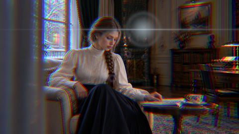

OP01 · 暖光回忆 / Warm memory
暖色椭圆漏光从左上移向右侧；高光产生暖红晕边。
OP02 · 珍珠柔光 / Pearl soft
中性偏冷高光柔化；低强度白色漏光缓缓移过。不是皮肤美颜。
OP03 · 青蓝科技 / Cyan tech
青蓝镜头星芒斜向扫过，红蓝通道小幅径向分离并在中段增强。
OP04 · 鎏金发布 / Gold launch
金色横向长星芒由暗转亮再回落；叠加少量暖色高光扩散。
OP05 · 玫瑰梦境 / Rose dream
玫瑰紫漏光对角流动，与偏粉高光扩散组成梦境氛围。

OP06 · 棱镜脉冲 / Prism pulse
红蓝径向分离在中段快速增强，配合冷白星芒脉冲。不是语义节拍检测。
OP07 · 银色玻璃 / Silver glass
细窄冷白横向星芒与柔和中性高光；亮点从右上移向左侧。
OP08 · 落日光晕 / Sunset halo
偏橙低角度圆光源缓缓下落，亮部叠加暖色边缘晕光。不是日光重打光。